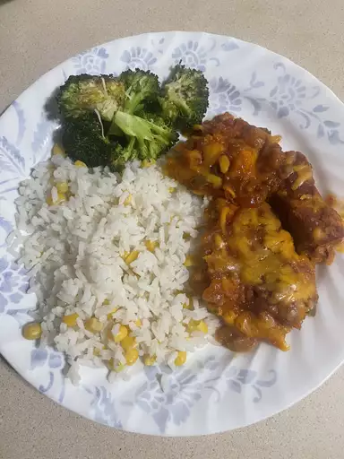

Salsa Chicken

Description
This salsa chicken recipe is very easy and quick! Someone gave me this
recipe a few years back, and it has become a household favorite.
Depending on your taste, you can use mild, medium, or hot salsa.
I usually serve it with Spanish rice and Mexican-style canned corn.
Ingredients
- 4 skinless, boneless chicken breast halves
- 4 teaspoons taco seasoning mix
- 1 cup salsa
- 1 cup shredded Cheddar cheese
- 2 tablespoons sour cream (Optional)
Directions
- Preheat the oven to 375 degrees F (190 degrees C).
Lightly grease a 9x13-inch baking dish.
- Preheat the oven to 375 degrees F (190 degrees C).
Lightly grease a 9x13-inch baking dish.
- Bake in the preheated oven until chicken is tender and
juicy and the juices run clear, 25 to 35 minutes.
- Sprinkle chicken evenly with cheese. Continue baking until
cheese is melted and bubbly, 3 to 5 minutes more. Top with
sour cream and serve.
Home Page